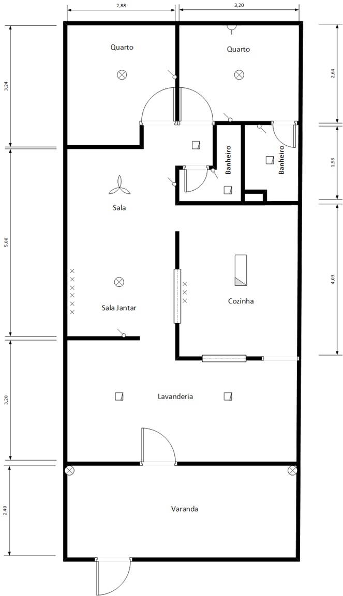
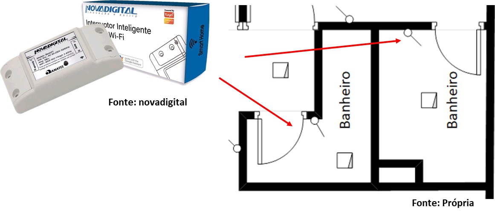
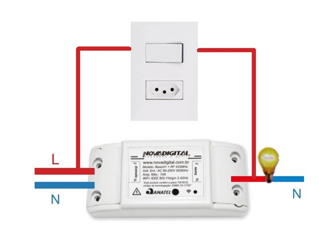
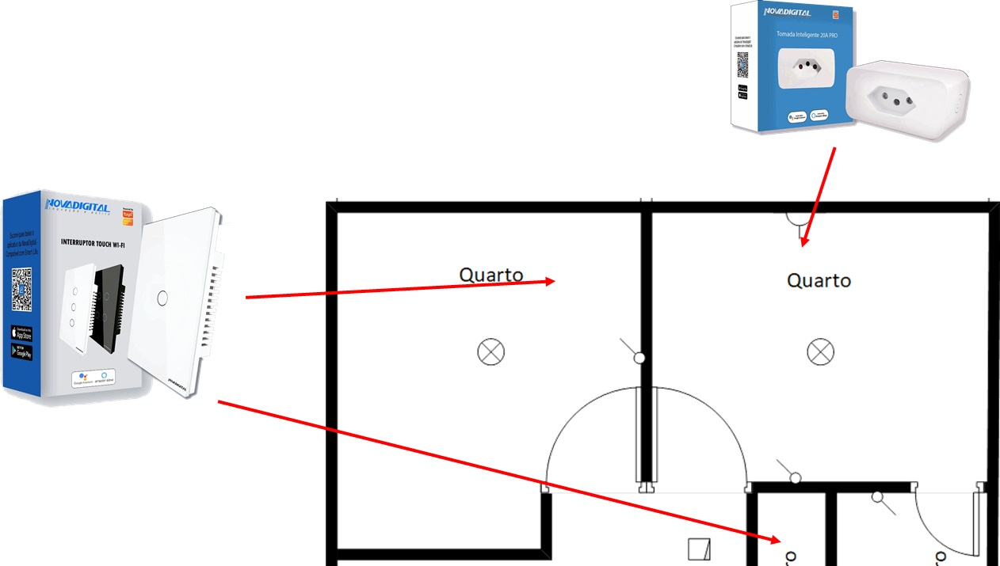
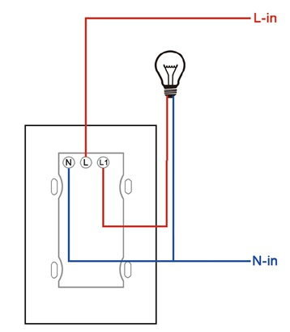
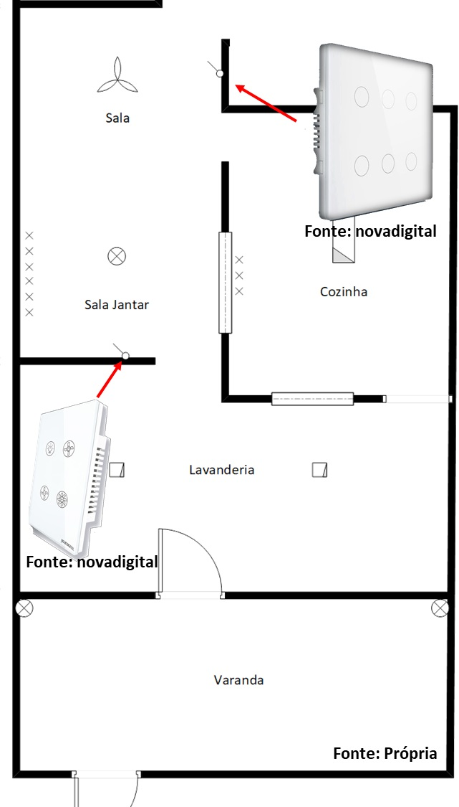
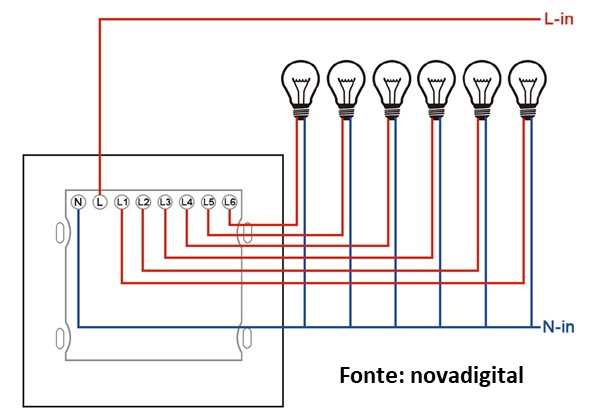
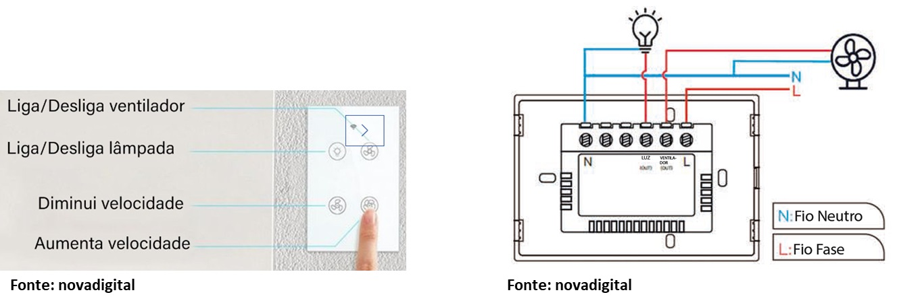
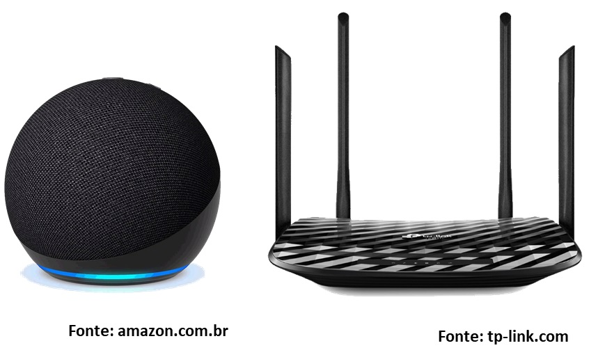

Nos dias atuais, é cada vez mais necessário que os projetos elétricos contemplem a acessibilidade, garantindo que pessoas com necessidades especiais e idosos possam usufruir dos espaços públicos e privados de maneira autônoma, segura e confortável, especialmente em suas residências. É fundamental que o design e a implementação de sistemas elétricos considerem a acessibilidade, assegurando que todas as pessoas, independentemente de suas condições ou limitações, tenham acesso seguro e adequado à energia elétrica e aos equipamentos que ela alimenta. Esse conceito envolve a criação de ambientes que possam ser facilmente utilizados por indivíduos com deficiências ou mobilidade reduzida, além de idosos, promovendo a inclusão e a segurança. Nesse contexto, normas e diretrizes específicas são essenciais para orientar a concepção de instalações elétricas acessíveis, atendendo às necessidades de todos os usuários e garantindo conforto e bem-estar nesses ambientes.
Aqui temos a planta representada com os pontos de instalações elétricas disponível.
A proposta é automatizar cada ambiente e apresentar de forma suscinta o método de instalações e valores necessário para implantação.
Nos banheiros temos a instalação da Interruptor Inteligente Wi-Fi do fabricante NovaDigital
Custo para instalação:
Abaixo temos o esquema encontrado no manual do fabricante, onde de forma sucinta ligamos a faze e neutro no Interruptor Inteligente Wi-Fi fazendo um paralelo com o interruptor convencional sendo possível a utilização de ambos.
Nos Quartos temos a instalação da Interruptor Touch Wi-Fi do fabricante NovaDigital, adicionando a Tomada Inteligente PRO 20A para automatização do Ar-Condicionado.
Custo para instalação:
Abaixo temos o esquema encontrado no manual do fabricante para instalação do Interruptor Touch de ZigBee 6 Botões, onde se faz necessário ligação de fase e neutro para alimentação do modulo inteligente, e a saída para cada lâmpada para a interligação do circuito.
Nos demais ambientes temos a instalação do Interruptor Touch de ZigBee 6 Botões e para a sala de Jantar o Interruptor Inteligente para Ventilador
Custo para instalação:
Para instalação das tomadas apenas efetuamos a troca pela Tomada Inteligente PRO 20A. Abaixo temos o esquema encontrado no manual do fabricante para instalação do Interruptor Touch Wi-Fi, sendo necessário faze e neutro para o modulo inteligente e um retorno para ligação da lâmpada.
Abaixo temos o esquema encontrado no manual do fabricante para instalação do Interruptor Inteligente para Ventilador, neste temos a disponibilidade de ligar a lâmpada, botões para aumentar e diminuir velocidade do ventilador e ligar e desligar o ventilador. Aqui temos uma ligação com:
A finalidade da Echo Dot é controlar dispositivos da casa inteligente, como os citados anteriormente desde interruptores, tomadas, ar condicionados e equipamentos eletrônicos que sejam compatíveis. Já o Roterador TP-Link serve para interligar todos de forma autônoma, sem utilização de fios utilizando a rede tecnologia Wireless.
Custo para instalação:
Após análise do orçamento dos materiais e mão de obra podemos perceber a automatização de diversos equipamentos eletrônicos, tornando-os acessíveis por comando de voz, facilitam o acesso às mais diversas comodidades, comprovando que a automatização pode ser completamente personalizada, o que garante que irá atender às necessidades individuais de cada um. A automação residencial não é algo inacessível, pois cada vez surgem novas tecnologias barateando o processo. É o momento ideal para que essa tecnologia seja utilizada para atender o público em questão, deixando apenas de ser um artigo de luxo para dar mobilidade e independência gerando qualidade de vida ao idoso e deficiente. A ideia de trazer esse tema surgiu a partir de situações que alguns integrantes do grupo vivenciaram com pessoas de sua família e conhecidos, vale a pena ressaltar que entender a necessidade desse grupo de pessoas é dever da família, por conta disto postamos o link do site em nossas redes sociais e grupos de Whatzapp para alcançar o maior número de pessoas possíveis.